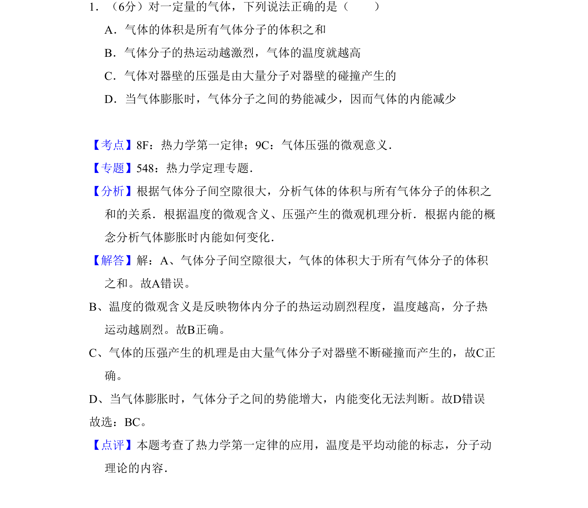
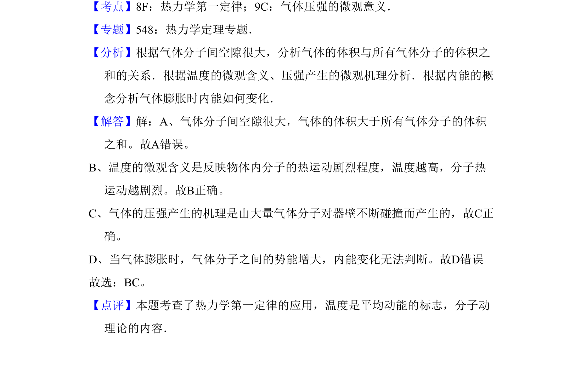

考点：气体压强微观意义 温度的微观含义 热力学第一定律 内能
气体压强微观意义
温度的微观含义
热力学第一定律
内能

气体体积与分子体积关系、温度微观含义、压强微观机制、内能变化判断

📄 原 PDF 第 1 页：素材/真题/吉林/2008-2024·（吉林）物理高考真题/2008年高考物理试卷（全国卷Ⅱ）（解析卷）.pdf
素材/真题/吉林/2008-2024·（吉林）物理高考真题/2008年高考物理试卷（全国卷Ⅱ）（解析卷）.pdf